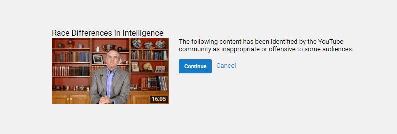
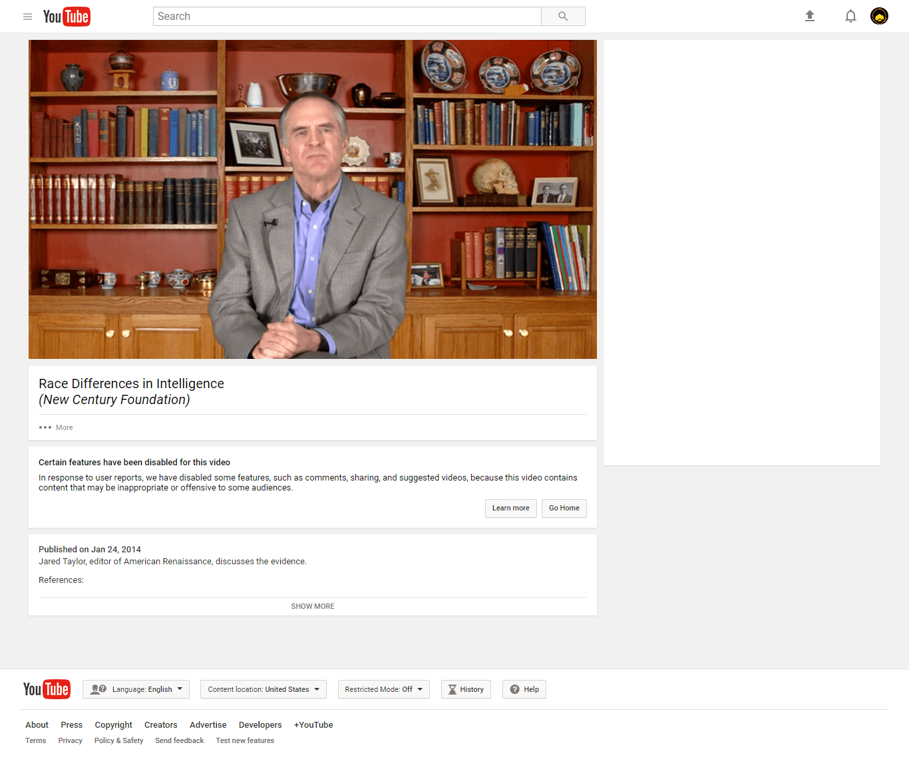

Daryush "Roosh" Valizadeh created ROK in October 2012. You can visit his blog at RooshV.com or follow him on Twitter and Facebook.


There has so much truth being shared on Youtube lately that Google decided to partner with the Anti-Defamation League to shut it all down by introducing a program to sandbox videos they merely don’t like. This has come just months after a demonetization wave that impacted many conservative channels.
We’ll soon be applying tougher treatment to videos that aren’t illegal but have been flagged by users as potential violations of our policies on hate speech and violent extremism. If we find that these videos don’t violate our policies, but contain controversial religious or supremacist content, they will have some features removed. The videos will remain on YouTube behind an interstitial, won’t be recommended, won’t be monetized, and won’t have key features including comments, suggested videos, and likes.
This censorship tool has just been rolled out and the first known sandboxed video has been identified. Would you like to take a guess as to what the video is about? It’s not about ISIS or child sexualization. It isn’t a video by an unhinged liberal encouraging a coup against Donald Trump. It’s a video titled “Race Differences In Intelligence.”
Try to watch the following to see how the sandboxing works…
Youtube won’t let you watch the embedded video. Instead, it takes you to an interstitial screen warning you of the “offensive” speech you’re about to witness.

Are you triggered yet, shitlord? If you’re not and click through, you’re greeted with a naked screen that doesn’t even let you visit the creator’s channel.

The video itself was produced by Jared Taylor of American Renaissance. It contained the argument that the main reason blacks have poorer outcome than whites is not due to lack of opportunity but lower IQ. Whether you agree with that argument or not, Youtube believes that no one should have the ability to share, comment, or like because of it. You’ll never see it recommended to you or shown in a search result. What is it about the idea Taylor shares that has caused the ADL and Google to go to extreme lengths in censoring it? As you may already know, it square goes against their egalitarian agenda.
Concealing the lie of egalitarianism requires artificial cosmetics in every facet of Western life. The media must not report on incidents that show sex or race differences. The government must construct laws and policy to help “equalize” the sexes, which means demoting heterosexual men as second-class citizens. Public schools and universities must spread propaganda to give an intellectual basis for the big lie that ends up being dismantled by the work of a few dozen dedicated bloggers.
The eyes and ears of the masses must be deliberately impaired to prevent them from seeing contradictions of the big lie in every day of their lives, and those who have shaken off the cataracts of their vision, who get close to exposing the lie after peeling the layers that conceal it, must be viciously attacked and marginalized.
Silicon Valley, once a brand associated with innovation and high technology, is now becoming linked to censorship and stifled speech. Instead of executing their mission to create technologies that improve human lives, they’re using it to innovate new ways to inflict pain and suffering on those who disagree with their globalist nightmare of the world. These are the people who overlook Islamic terrorism by urging us to “pray for peace” while using a single right-wing death in Charlottesville as an excuse to launch a massive internet purge.
As of this writing, numerous right-wing websites and personalities have been banned from PayPal, Twitter, Paypal, Stripe, Facebook, Instagram, Mailchimp, Soundcloud, Uber, and countless other platforms. To make matters worse, domain registrars and website maintenance companies such as CloudFlare and GoDaddy have no-platformed The Daily Stormer, keeping the site offline since Sunday. It’s clear that ideological dissidents are going to have to change their tactics in order to keep their websites and other platforms online.
By now it’s clear that every corporation in Silicon Valley hates you and your ideas. They will demonetize you, demotivate you from using their sites, and then finally deplatform you, all to preserve a cherished agenda which is having a mighty hard time standing up to the truth. If this continues until suitable alternatives are created, we may be entering a dark age for the once free internet.
Read Next: Daily Stormer Is The First Website To Be Banned From The Internet For Its Speech